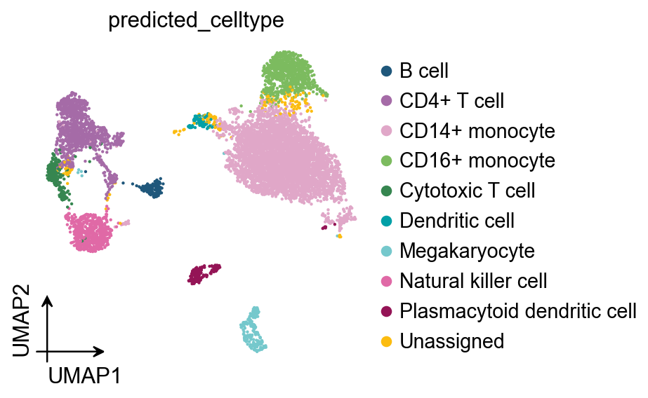
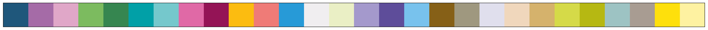
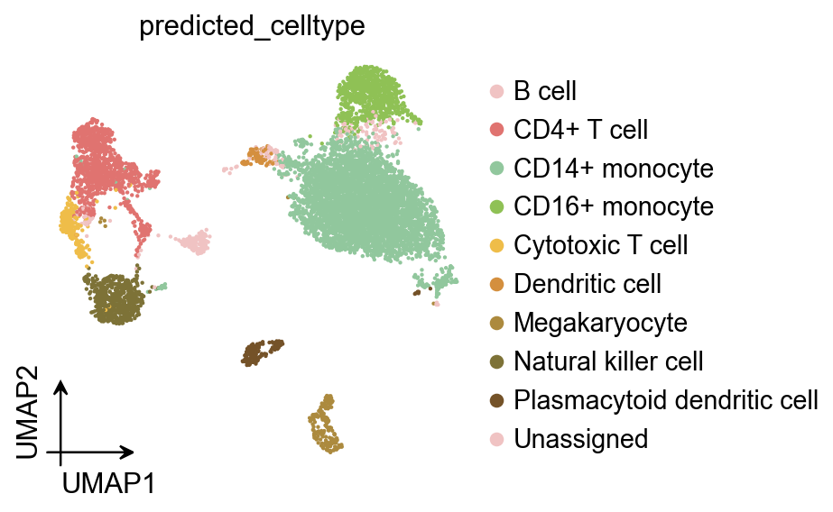
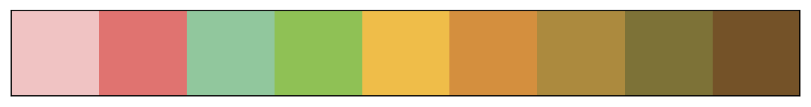
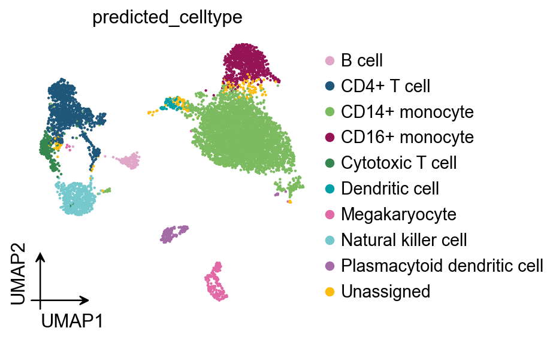
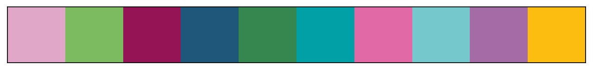
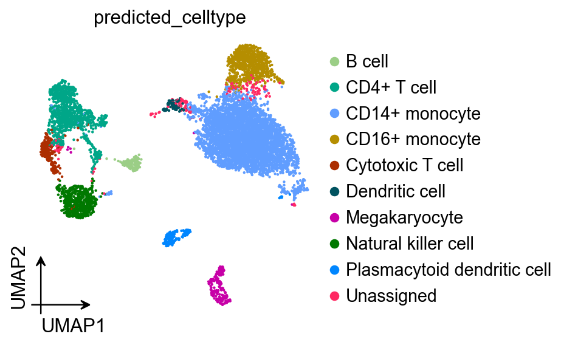
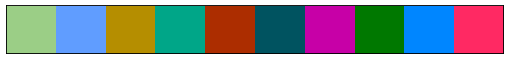
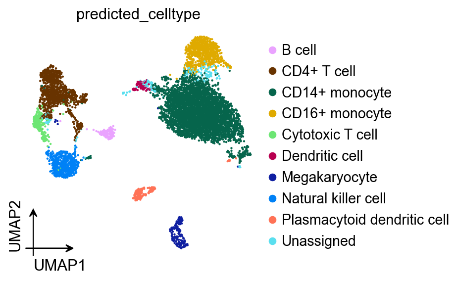
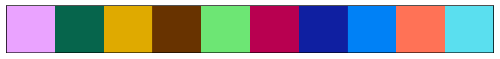

Palette optimization for publication-quality single-cell & spatial plots¶
Color is not just an aesthetic choice—it directly affects how clearly readers can distinguish neighboring categories (cell types, clusters, domains) in dense visualizations. In spatially resolved transcriptomics (SRT), default categorical palettes and lexicographical (alphabetical) color assignment often place similar colors on spatially adjacent or interlaced cell types, creating perceptual ambiguity.
In this tutorial notebook we demonstrate how to improve categorical colorization using Spaco (Jing et al., Patterns 2024), a spatially aware colorization framework that:
Models spatial relationships between clusters using the Degree of Interlacement (DOI) metric and a cluster interlacement graph (CI-graph).
Selects a palette either (i) automatically from the CI-graph embedding (graph-guided) or (ii) from a reference image (image-guided).
Assigns colors to clusters by matching the CI-graph to a color-difference graph (CD-graph), so that strongly interlaced/neighboring clusters receive more contrasting colors.
Learning goals¶
By the end of this notebook you will be able to:
Preview and combine OmicVerse categorical palettes for UMAP and spatial plots.
Optimize only the cluster→color mapping while keeping a given palette fixed.
Automatically generate a palette and mapping using Spaco (CI-graph guided).
Extract a publication-style “theme palette” from an image and apply it to your data.
Understand key parameters (
radius,n_neighbors) and when to tune them.
Reference: Jing, Z. et al. (2024) Spaco: A comprehensive tool for coloring spatial data at single-cell resolution. Patterns 5:100915.
import scanpy as sc
import omicverse as ov
from omicverse.external import spaco
ov.style()
# Enable auto-reload for development
%load_ext autoreload
%autoreload 2
🔬 Starting plot initialization...
🧬 Detecting GPU devices…
✅ Apple Silicon MPS detected
• [MPS] Apple Silicon GPU - Metal Performance Shaders available
✅ plot_set complete.
The autoreload extension is already loaded. To reload it, use:
%reload_ext autoreload
Setup¶
We use OmicVerse for plotting and its external.spaco wrapper to access Spaco.
The code cells below are kept minimal on purpose; the tutorial emphasis is on what each step accomplishes and why it matches the method described in the Spaco paper.
Inputs needed by Spaco
cell_coordinates: a 2D coordinate matrix (e.g.,X_umaporspatial)cell_labels: categorical labels for each cell/spotOptional: a fixed
palette(to only optimize the assignment), orimage_palette(to extract theme colors)
Key parameters
n_neighbors: k in the spatial kNN graph used to compute DOI (paper default k≈30).radius: a distance scale used in the “dual-outlier-free” neighbor refinement; it must match the units ofcell_coordinates.For spatial coordinates (µm), a typical starting point is ~50 µm.
For UMAP coordinates (dimensionless), start with ~0.05–0.2 and adjust if results look over/under-smoothed.
adata=ov.datasets.pbmc8k()
🩸 Downloading PBMC 8k dataset
Using Stanford mirror for pbmc8k
⚠️ File ./data/pbmc8k.h5ad already exists
Loading data from ./data/pbmc8k.h5ad
✅ Successfully loaded: 7750 cells × 20939 genes
sdata=ov.datasets.seqfish()
🐟 Downloading SeqFish dataset
Using Stanford mirror for seqfish
🔍 Downloading data to ./data/seqfish.h5ad...
✅ Download completed
Loading data from ./data/seqfish.h5ad
✅ Successfully loaded: 19416 cells × 351 genes
Example datasets¶
We load:
PBMC8k (single-cell RNA-seq) and visualize cell types on UMAP.
seqFISH (spatial) and visualize cell types on tissue coordinates.
Although Spaco is designed for spatial coordinates, the same idea applies to any embedding where “neighbors” are meaningful. Here we use UMAP as a simple demonstration of neighborhood-aware color assignment, and obsm['spatial'] for the true spatial case.
1) Prepare and preview palettes¶
OmicVerse provides a set of ready-to-use categorical palettes, e.g. sc_color, red_color, green_color, orange_color, blue_color, purple_color.
In practice, you may want to:
Start from a default qualitative palette for quick exploration.
Manually compose a palette (e.g., mixing a few distinct hues) for small numbers of clusters.
When you have many clusters or strong spatial mixing, keep a broad palette but optimize the cluster→color assignment with Spaco.
Below we preview:
The default
sc_coloron UMAP and spatial plots.A manually composed palette (by concatenating several base palettes).
ov.pl.umap(
adata,
color=['predicted_celltype'],
frameon='small',
palette=ov.pl.sc_color
)
ov.pl.palplot(ov.pl.sc_color)
X_umap converted to UMAP to visualize and saved to adata.obsm['UMAP']
if you want to use X_umap, please set convert=False
{kind=link}

(<Figure size 2240x80 with 1 Axes>, <Axes: >)
{kind=link}

Apply the same palette to a spatial plot¶
The goal is consistency: once you decide a palette style, you typically want it to work across both embedding plots (UMAP) and tissue plots. The next cell applies sc_color to a spatial embedding and visualizes the palette as a color strip.
ov.pl.embedding(
sdata,
basis='spatial',
color=['celltype_mapped_refined'],
frameon='small',
palette=ov.pl.sc_color
)
ov.pl.palplot(ov.pl.sc_color)
{kind=link}
Manual palette composition (when you want full control)¶
For a small set of categories (e.g., <10–20), manually combining a few high-contrast colors can be enough.
In the next cell we build a custom palette by concatenating subsets of OmicVerse palettes, then apply it to the UMAP plot.
ov.pl.umap(
adata,
color=['predicted_celltype'],
frameon='small',
palette=ov.pl.red_color[:2]+ov.pl.green_color[:2]+ov.pl.orange_color[:5]
)
ov.pl.palplot(ov.pl.red_color[:2]+ov.pl.green_color[:2]+ov.pl.orange_color[:5])
X_umap converted to UMAP to visualize and saved to adata.obsm['UMAP']
if you want to use X_umap, please set convert=False
{kind=link}

(<Figure size 720x80 with 1 Axes>, <Axes: >)
{kind=link}

2) Optimize color assignment with a given palette¶
Sometimes you already have a palette you want to keep (lab conventions, previous figures, journal theme), but you want to reorder which cluster gets which color so that neighboring/interlaced clusters become easier to distinguish.
Spaco (Jing et al., Patterns 2024) does this by:
Building a cluster interlacement graph (CI-graph) from coordinates + labels using the Degree of Interlacement (DOI) metric computed on a refined spatial kNN graph (dual-outlier-free strategy).
Building a color difference graph (CD-graph) from the chosen palette using a perceptual color difference metric.
Finding a one-to-one graph matching (a permutation of colors) that best aligns CI-graph edge weights with CD-graph edge weights.
A common way to write the objective is:
[ L(P) = \lVert P A_{CI} P^T - A_{CD} \rVert_F, \quad P^* = \arg\min_P L(P), ]
where (P) is a permutation matrix (one-to-one assignment).
In code, this corresponds to calling spaco.colorize(..., palette=palette_default), which keeps colors fixed but optimizes the mapping from clusters to colors.
UMAP example: optimize only the mapping¶
We start from the palette that Scanpy/OmicVerse already stored in adata.uns['..._colors'].
Spaco returns a dictionary {label: hex_color} that you can pass directly to plotting functions.
# Get optimized color-cluster assignment with Spaco
palette_default = [i[:7] for i in adata.uns['predicted_celltype_colors']].copy()
color_mapping = spaco.colorize(
cell_coordinates=adata.obsm['X_umap'],
cell_labels=adata.obs['predicted_celltype'],
colorblind_type="none",
radius=0.05, # radius is related to the physical scaling of .obsm['spatial']
n_neighbors=30,
palette=palette_default, # if `palette` is specified, the `colorize` function only refines the assignment.
)
color_mapping
|-----> Calculating cluster distance graph...
|-----------> Calculating cell neighborhood...
|-----------> Filtering out neighborhood outliers...
|-----------> Calculating cluster interlacement score...
|-----------> Constructing cluster interlacement graph...
|-----> Calculating color distance graph...
|-----------> Calculating color perceptual distance...
|-----------> Constructing color distance graph...
|-----------> Difference of the most similar pair in the palette is 98.11
|-----> Optimizing color mapping...
{'B cell': '#e0a7c8',
'CD14+ monocyte': '#7cbb5f',
'CD16+ monocyte': '#941456',
'CD4+ T cell': '#1f577b',
'Cytotoxic T cell': '#368650',
'Dendritic cell': '#01a0a7',
'Megakaryocyte': '#e069a6',
'Natural killer cell': '#75c8cc',
'Plasmacytoid dendritic cell': '#a56ba7',
'Unassigned': '#fcbc10'}
ov.pl.umap(
adata,
color=['predicted_celltype'],
frameon='small',
palette=color_mapping
)
ov.pl.palplot(list(color_mapping.values()))
X_umap converted to UMAP to visualize and saved to adata.obsm['UMAP']
if you want to use X_umap, please set convert=False
{kind=link}

(<Figure size 800x80 with 1 Axes>, <Axes: >)
{kind=link}

Spatial example: optimize only the mapping¶
We repeat the same procedure on true spatial coordinates (sdata.obsm['spatial']), where neighborhood relationships correspond to physical proximity in tissue.
# Get optimized color-cluster assignment with Spaco
spalette_default = [i[:7] for i in sdata.uns['celltype_mapped_refined_colors']].copy()
scolor_mapping = spaco.colorize(
cell_coordinates=sdata.obsm['spatial'],
cell_labels=sdata.obs['celltype_mapped_refined'],
colorblind_type="none",
radius=0.05, # radius is related to the physical scaling of .obsm['spatial']
n_neighbors=30,
palette=spalette_default, # if `palette` is specified, the `colorize` function only refines the assignment.
)
scolor_mapping
|-----> Calculating cluster distance graph...
|-----------> Calculating cell neighborhood...
|-----------> Filtering out neighborhood outliers...
|-----------> Calculating cluster interlacement score...
|-----------> Constructing cluster interlacement graph...
|-----> Calculating color distance graph...
|-----------> Calculating color perceptual distance...
|-----------> Constructing color distance graph...
|-----------> Difference of the most similar pair in the palette is 40.78
|-----> Optimizing color mapping...
{'Allantois': '#a499cc',
'Anterior somitic tissues': '#9f987f',
'Cardiomyocytes': '#e0a7c8',
'Cranial mesoderm': '#5e4d9a',
'Definitive endoderm': '#e069a6',
'Dermomyotome': '#e0dfed',
'Endothelium': '#1f577b',
'Erythroid': '#75c8cc',
'Forebrain/Midbrain/Hindbrain': '#eaefc5',
'Gut tube': '#f0d7bc',
'Haematoendothelial progenitors': '#fcbc10',
'Intermediate mesoderm': '#866017',
'Lateral plate mesoderm': '#f0eef0',
'Low quality': '#941456',
'Mixed mesenchymal mesoderm': '#368650',
'NMP': '#d5b26c',
'Neural crest': '#78c2ed',
'Presomitic mesoderm': '#7cbb5f',
'Sclerotome': '#a56ba7',
'Spinal cord': '#01a0a7',
'Splanchnic mesoderm': '#279ad7',
'Surface ectoderm': '#ef7b77'}
ov.pl.embedding(
sdata,
basis='spatial',
color=['celltype_mapped_refined'],
frameon='small',
palette=scolor_mapping
)
ov.pl.palplot(list(scolor_mapping.values()))
{kind=link}
{kind=link}
3) Automatic colorization (CI-graph guided)¶
If you do not provide a palette, Spaco can generate one automatically by embedding the CI-graph into color space:
Compute DOI and CI-graph from labels + coordinates (kNN + dual-outlier-free refinement).
Embed CI-graph vertices into a 3D space using UMAP and rescale the embedding into the perceptually uniform CIELab color space.
To avoid overly dark/bright colors, the illuminant channel (L) is typically constrained (e.g., (L\in[20,85]) in the paper).
Convert Lab → RGB hex and then optionally refine the final cluster-color assignment (graph matching step).
This mode is particularly useful when:
You have many clusters (dozens to hundreds),
Clusters are spatially intermixed, and
You do not want to manually curate a large palette.
UMAP: generate palette + mapping automatically¶
Here spaco.colorize infers both the palette (graph-guided) and the cluster→color mapping.
color_mapping = spaco.colorize(
cell_coordinates=adata.obsm['X_umap'],
cell_labels=adata.obs['predicted_celltype'],
colorblind_type="none",
radius=0.05, # radius is related to the physical scaling of .obsm['spatial']
n_neighbors=30,
#palette=palette_default, # if `palette` is specified, the `colorize` function only refines the assignment.
)
|-----> Calculating cluster distance graph...
|-----------> Calculating cell neighborhood...
|-----------> Filtering out neighborhood outliers...
|-----------> Calculating cluster interlacement score...
|-----------> Constructing cluster interlacement graph...
|-----> `palette` not provided.
|-----------> Auto-generating colors from CIE Lab colorspace...
|-----------------> Calculating cluster embedding...
|-----------------> Rescaling embedding to CIE Lab colorspace...
|-----> Optimizing cluster color mapping...
ov.pl.umap(
adata,
color=['predicted_celltype'],
frameon='small',
palette=color_mapping
)
ov.pl.palplot(list(color_mapping.values()))
X_umap converted to UMAP to visualize and saved to adata.obsm['UMAP']
if you want to use X_umap, please set convert=False
{kind=link}

(<Figure size 800x80 with 1 Axes>, <Axes: >)
{kind=link}

Spatial: generate palette + mapping automatically¶
Same as above, but using obsm['spatial'] so the DOI reflects tissue neighborhoods.
scolor_mapping = spaco.colorize(
cell_coordinates=sdata.obsm['spatial'],
cell_labels=sdata.obs['celltype_mapped_refined'],
colorblind_type="none",
radius=0.05, # radius is related to the physical scaling of .obsm['spatial']
n_neighbors=30,
#palette=spalette_default, # if `palette` is specified, the `colorize` function only refines the assignment.
)
|-----> Calculating cluster distance graph...
|-----------> Calculating cell neighborhood...
|-----------> Filtering out neighborhood outliers...
|-----------> Calculating cluster interlacement score...
|-----------> Constructing cluster interlacement graph...
|-----> `palette` not provided.
|-----------> Auto-generating colors from CIE Lab colorspace...
|-----------------> Calculating cluster embedding...
|-----------------> Rescaling embedding to CIE Lab colorspace...
|-----> Optimizing cluster color mapping...
ov.pl.embedding(
sdata,
basis='spatial',
color=['celltype_mapped_refined'],
frameon='small',
palette=scolor_mapping
)
ov.pl.palplot(list(scolor_mapping.values()))
{kind=link}
{kind=link}
4) Automatic colorization (Image guided)¶
For publication figures, you may want a coherent “theme” palette (e.g., from a cover image or an existing figure). Spaco supports image-guided palette extraction:
Convert pixels to CIELab, bin colors, and filter extreme luminance / rare colors.
Iteratively pick high-frequency colors while penalizing colors similar to already chosen ones.
Refine the palette using farthest point sampling (FPS) to maximize separation.
After a palette is extracted, Spaco still performs the graph-based assignment so that adjacent/interlaced clusters get more contrasting colors.
Tip: image-guided palettes are a great way to keep figures stylistically consistent across a paper or slide deck.
Load a reference image¶
We load a demo image (from the Spaco vignette repository) and visualize it. In practice, you can replace this with your own figure/cover image.
import requests
from io import BytesIO
from PIL import Image
import matplotlib.pyplot as plt
url = "https://raw.githubusercontent.com/BrainStOrmics/Spaco_scripts/main/Vignette/data/colorful-2468874_1280.jpeg"
img = Image.open(BytesIO(requests.get(url).content)).convert("RGB")
plt.imshow(img)
plt.axis("off")
plt.show()
{kind=link}
Apply image-guided palette to your data¶
Pass the image via image_palette=img. Spaco will extract a theme palette and then assign colors to clusters based on spatial (or embedding) neighborhoods.
color_mapping = spaco.colorize(
cell_coordinates=adata.obsm['X_umap'],
cell_labels=adata.obs['predicted_celltype'],
colorblind_type="none",
radius=0.05, # radius is related to the physical scaling of .obsm['spatial']
n_neighbors=30,
image_palette=img,
)
|-----> Calculating cluster distance graph...
|-----------> Calculating cell neighborhood...
|-----------> Filtering out neighborhood outliers...
|-----------> Calculating cluster interlacement score...
|-----------> Constructing cluster interlacement graph...
|-----> `palette` not provided.
|-----------> Using `image palette`...
|-----------> Drawing appropriate colors from provided image...
|-----------------> Extracting color bins...
|-----------------> Initiating palette...
|-----------------> Optimizing extracted palette...
|-----> Calculating color distance graph...
|-----------> Calculating color perceptual distance...
|-----------> Constructing color distance graph...
|-----------> Difference of the most similar pair in the palette is 175.51
|-----> Optimizing color mapping...
ov.pl.umap(
adata,
color=['predicted_celltype'],
frameon='small',
palette=color_mapping
)
ov.pl.palplot(list(color_mapping.values()))
X_umap converted to UMAP to visualize and saved to adata.obsm['UMAP']
if you want to use X_umap, please set convert=False
{kind=link}

(<Figure size 800x80 with 1 Axes>, <Axes: >)
{kind=link}

scolor_mapping = spaco.colorize(
cell_coordinates=sdata.obsm['spatial'],
cell_labels=sdata.obs['celltype_mapped_refined'],
colorblind_type="none",
radius=0.05, # radius is related to the physical scaling of .obsm['spatial']
n_neighbors=30,
image_palette=img,
)
|-----> Calculating cluster distance graph...
|-----------> Calculating cell neighborhood...
|-----------> Filtering out neighborhood outliers...
|-----------> Calculating cluster interlacement score...
|-----------> Constructing cluster interlacement graph...
|-----> `palette` not provided.
|-----------> Using `image palette`...
|-----------> Drawing appropriate colors from provided image...
|-----------------> Extracting color bins...
|-----------------> Initiating palette...
|-----------------> Optimizing extracted palette...
|-----> Calculating color distance graph...
|-----------> Calculating color perceptual distance...
|-----------> Constructing color distance graph...
|-----------> Difference of the most similar pair in the palette is 96.62
|-----> Optimizing color mapping...
ov.pl.embedding(
sdata,
basis='spatial',
color=['celltype_mapped_refined'],
frameon='small',
palette=scolor_mapping
)
ov.pl.palplot(list(scolor_mapping.values()))
{kind=link}
{kind=link}
Summary / take-home checklist¶
If you already like your colors but the plot is confusing → keep palette, optimize assignment (
palette=...).If you have many clusters and want maximal discernibility → CI-graph guided auto palette (no
palette).If you want a publication theme → image-guided palette (
image_palette=...) + graph-based assignment.Always tune
radiusto match the scale of your coordinates (UMAP vs µm).
Method reference¶
Spaco workflow: cluster interlacement modeling (DOI → CI-graph), adaptive palette selection (graph-guided or image-guided), and cluster-color assignment (CI-graph ↔ CD-graph matching).